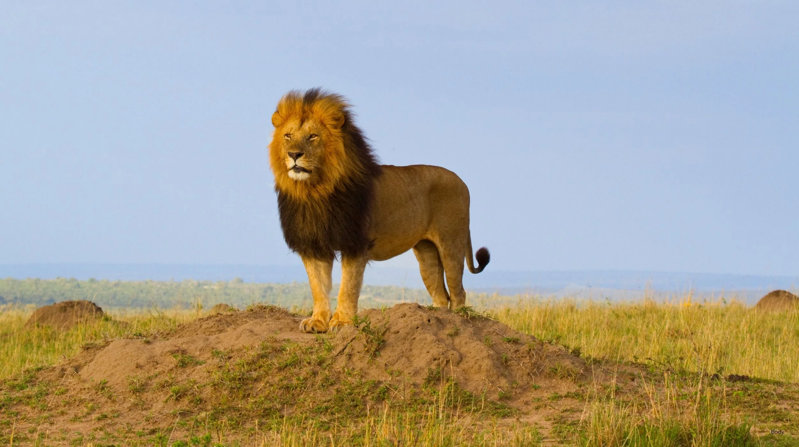
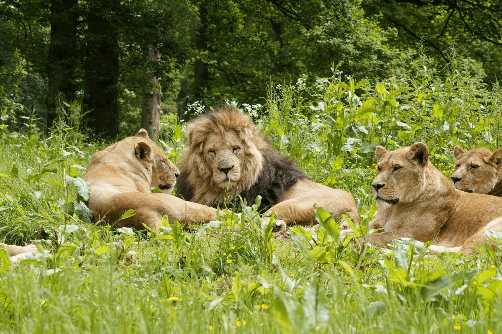

Home
Page_1
Page_2
HOME
1 The lion
(Panthera leo) is a large cat of the genus Panthera, currently ranging only in Sub-Saharan Africa and India. It
has a muscular, broad-chested body; a short, rounded head; round ears; and a dark, hairy tuft at the tip of its
tail. It is sexually dimorphic; adult male lions are larger than females and have a prominent mane that which
extends from the head to the shoulders and chest.

The lion inhabits grasslands, savannahs, and shrublands. It is an apex and keystone predator, preying mostly on
medium-sized and large ungulates. It is usually more diurnal than other wild cats, but when persecuted, it
adapts to being active at night and at twilight

It is a social species, forming groups called prides. A lion pride consists of related females and cubs, and a
few or one adult male who is unrelated to the females. Groups of female lions usually hunt together. Adult males
often compete to keep or gain their membership in the pride.

Lion has been extensively depicted in sculptures and paintings, on national flags, and in literature and films.
It is one of the most widely recognised animal symbols in human culture. Lions have been kept in menageries
since the time of the Roman Empire and have been a key species sought for exhibition in zoological gardens
across the world since the late 18th century. Cultural depictions of lions have occurred worldwide, particularly
as a symbol of power and royalty. They figure prominently as symbols and deities in ancient religions
2.html